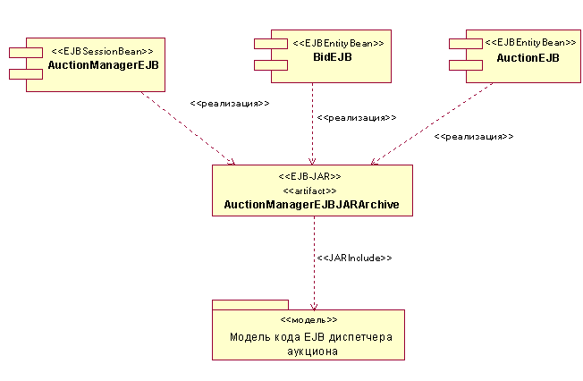
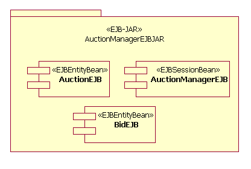
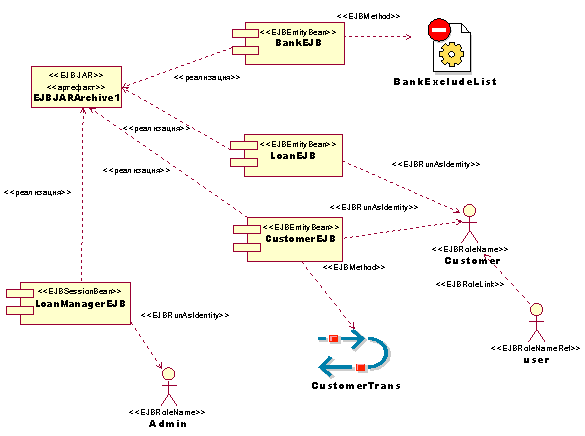
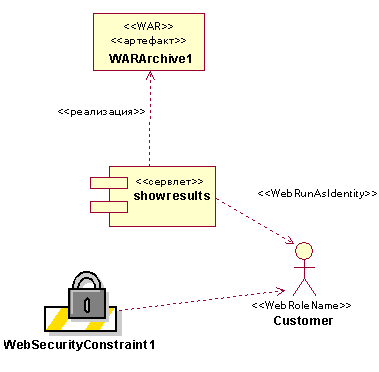

| Рекомендация: Модуль J2EE |
 |
|
| Связанные элементы |
|---|
ВведениеМодуль J2EE - это самый маленький независимый модуль в разработке приложения J2EE. Существуют разные виды модулей J2EE, описанные в Концепция: Обзор J2EE. Количество и размер модулей J2EE влияет на то, насколько легко будет развернуть и протестировать приложение J2EE. Это также влияет на простоту повторного использования компонентов в других приложениях и простоту адаптации системы к другим конфигурациям. Информация о компоновке модулей J2EE, см. раздел Рекомендация: Компоновка модулей J2EE. Подробная информация о развертывании модулей J2EE находится в разделе Руководство: Развертывание модулей и приложений J2EE. Идентификация модулей J2EEМодули J2EE создаются в процессе интеграции, но они отражают решения, принятые при реализации (и фактического проектирования). Модули J2EE обычно используются в пакете Реализация подсистем, который обычно соответствует Рабочий продукт: Проектирование подсистем. Модули J2EE должны содержать тесно связанные объекты EJB и вспомогательные классы, используемые ими. В общем случае, такие взаимосвязи определяются в проекте, и эти классы группируются в Подсистему проекта. Идентификация Подсистем проекта должна учитывать проблемы повторного использования, замещения и поддержки множественных конфигураций развертывания. Однако, когда выделяются модули для развертывания на определенных узлах, могут проявиться недостатки проекта и потребоваться изменения в Подсистемах проекта (и/или Подсистемах реализации). Определите, какие модули J2EE должны содержать компоненты, предназначенные для отдельного контейнера. Web-компоненты запакованы в Web-модулях, компоненты EJB запакованы в модулях EJB, а компоненты клиентского приложения запакованы в модулях клиентского приложения. Регулярные классы Java, которые используются во многих модулях, должны быть запакованы в отдельных модулях J2EE. Полученные в результате файлы JAR должны быть указаны в class-path тех модулей, которым они требуются (или в кратковременном замыкании таких ссылок class-path). В общем случае, при идентификации модулей J2EE, начинайте с идентификации одного модуля для каждой Подсистемы реализации, если только подсистема не содержит компонентов для развертывания в различных контейнерах, а затем определите различные модули для каждого контейнера. Моделирование модулей J2EEМодули J2EE представлены в Модель реализации как артефакты UML со стереотипом, идентифицирующим их тип: <<EJB-JAR>>, <<JAR>> или <<WAR>>. Композиция компонентов (таких как EJB или сервлеты) в модуле J2EE может быть показана графически с помощью обозначения зависимости <<реализует>> от содержимого компонента к модулю, в котором он упакован, как это показано на следующей диаграмме. Могут быть также нарисованы зависимости <<JARInclude>>, чтобы показать включение всего пакета Java в архив.  Другая возможность состоит в том, чтобы представить архив как пакет и показать содержащиеся в пакете компоненты так, как это изображено на следующей диаграмме.  В дополнение к моделированию того, какие компоненты должны быть упакованы в архиве, вы можете также создать модель свойств компонентов, которые в конечном счете документируются в файле описания архива. Ниже приведен пример модели некоторых свойств компонента EJB.  На верхней диаграмме показана сборка объектов EJB, BankEJB, LoanEJB, CustomerEJB и LoanManagerEJB, в одном модуле, EJBJARArchive1. Обратите внимание на способ моделирования свойств метода EJB, ролей защиты и транзакций. В этом примере CustomerEJB выполняется под типом транзакции, указанном с помощью CustomerTrans (например, "Required"). В исходном коде используется роль "пользователь", которая соответствует пользовательской роли "Клиент" в файле описания. Кроме того, все методы в LoanEJB и CustomerEJB выполняются с идентификационными данными "Клиента", даже если вызов пользователя принадлежит другой роли. Подобным образом, методы LoanManagerEJB выполняются как "Администратор". Наконец, ни к одному методу не могут получить доступ пользователи в BankEJB. Ниже приведен пример модели некоторых свойств Web-компонента.  На верхней диаграмме показана сборка сервлета в Web-модуле. Обратите внимание на моделирование ролей защиты и ограничений, где пользователи типа "Клиент" сами выполняют методы сервлета вывода результатов, а предмет ограничений защиты определяется свойствами WebSecurityContraint1. Развертывание модуля J2EE на узле может быть показано в Модели развертывания. Более подробная информация о моделировании преобразования из модулей в узлы развертывания находится в разделе Руководство: Описание распределения для приложений J2EE. Файлы описанияКаждый модуль J2EE содержит файл описания стандарта J2EE, а также ноль или более файлов описания поставщика. Разные виды файлов описания описаны в Концепция: Обзор J2EE. В общем случае, файлы описания стандарта J2EE содержат преимущественно проект и решения реализации. Решения, на которые RUP ссылается как на "решения развертывания", например, решение о том, на каких узлах выполняется компонент, и как компонент настроен для определенного узла, содержаться в файлах описания поставщика. Файлы описания преследуют две различные цели:
Содержимое файла описания устанавливается при создании Модуля J2EE и при сборке в Приложение J2EE. Информация о компоновке модулей J2EE, см. раздел Рекомендация: Компоновка модулей J2EE. Более подробная информация о сборке приложений J2EE находится в разделе Руководство: Сборка приложений J2EE. |
© Copyright IBM Corp. 1987, 2006. Все права защищены.. |